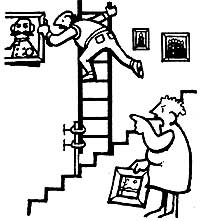

We'll let Antioch, California's Kay Roads tell you about her "all-wet" idea herself: "I firmly believe that warm water has deeply therapeutic qualities . . . in other words, I love to soak in a bathtub. During the winter, though, the soothing liquid needs to be heated up-all over again -every 15 minutes or so. Such continual `recharging' can get downright inconvenient (and costly) so I `dipped' into my childhood past and came up with the perfect tub-lover's energy saver. bubble bath.
"Yessir, the billions of floating orbs make such an effective bath insulator that I can sit back-with a few current issues of MOTHER-and soak my bones for a leisurely hour and a half... without ever adding more hot water!
"Besides all that," confesses our California tubber, "bathing with bubbles is fun!"
Canton Rhyne of Asheboro, North Carolina knows how a lot of shower-loving folks can save energy, too! Carlton's figured out how to make a homemade water-saver (a device which may cost as much as $15.00 in stores) for 10 cents or less!
All you have to do, the thrifty Tarheel advises, is unscrew your current shower head and see if a dime or penny can be snugly placed into the water sprayer's connector piece. If either coin fits, drill a 1/16" to 1/8" hole in the appropriate disc, plop the coin into the connector and then screw the head back on. Your revamped shower will give a fine, high-pressure spray (perfectly good for bathing) that uses less water than its old "gusher" head did ... while you save on your monthly water bill and avoid shelling out money for a "brand name" water-saver device.
Out in Cohasset, Massachusetts the winters tend to drag on . . . and long johns tend to wear out! But Michelle McLean has a clever way to recycle the lower half of those body warmers . . . by turning the bottoms into tops! When the torso part of her winter wonders gets ail stretched out-and the leg sections shrink up to the length of knickers-Ms. McLean cuts and hems a neck opening where the crotch used to be.
She then turns the garment upside down and pulls it over her head!
John Balser has another commonsense way to stretch the life of old long john drawers .. . and his tip can expand the usefulness of thermal tops and holey wool socks, too! The Lafayette, Colorado resident cuts the foot sections off of four worn-out woollies and sews the still-good tubes onto the shrunken ends of his long johns' sleeves and leggings. This grafting technique puts new life (or should we say length?) in his short-limbed winter underwear . . . and gets extra use out of old socks in the bargain.
"There are few things in life as downright irritating as having your big scoop shovel jam in a floor crack when you're getting grain from the storage bin. The recoil from that sudden stop will hurt your wrist and shoulder something terrible."
So writes Larry A. Spanish of Norfolk, Virginia ... and you know, the fellow certainly has a point. Fortunately, the Southerner has a solution, too: "Put two mid-sized cotter pins on the business end of that scoop shovel. The spade's edge will ride on the round `ball' of those wire fasteners . . . so cracks, floor irregularities, and railheads will no longer give you any problems."
This next piece of down-home lore is down right "unpractical". It won't cure scours, save thread, or fix a leak in a tractor's oil tank . . . but it may warm some hearts. "My sister-in-law and I both tried to keep daily diaries," says Cheryl Tavares, "but somehow we always stopped writing in them. Now we jot down `what's happening' once a week, and mail this news to each other. At the end of the year, we give the letters back . . . and each of us has a `journal' to keep! Plus, we're able to stay in close touch this way, even though we live 300 miles apart."
The Newfield, New Yorker also saves her friends' correspondence and gives these people their own "diaries" (in nicely decorated folders) every Christmas. Cheryl's discovered that letterretuming encourages folks to write more often . . . and to include those interesting details they may want to recall-themselves-in later years.
Speaking of Christmas, Mr. and Mrs. Charles Anderson have a holiday tip "Yule" be sure to aprociate. The Moundsville, West Virginians p, recycle all the greeting cards they get each year. They simply cut the "picture half" off each salutation, draw a line down the back of this decorated section . . . and what do they have?
Attractive postcards!
You say you want to save money by burnin' newspapers in the ol' wood stove ... but you don't want to shell out cash for a fancy logrolling gadget. Then save your pesos-says Columbia Station, Ohio's Leonard Sotz-and make your own paper rounds! Just lay a half-inch stack of newspapers on top of a two-foot piece of wire (a coat hanger works fine) so that both ends of the metal strand still show. Then roll the papers into a snug log, wrap the wire around this print cylinder, and twist the metal's ends to secure your "Daily Times timber".
Mr. Sotz says that you should only add paper rounds to an already hot fire. The Buckeye State wood burner also notes that-if you pick the wire out of the ashes when the flames die down -you can use the same log binder over and over... for at least a year!
If your fireplace has an ash-emptying chute at its base, you can take Mrs. J.A. Oppert's advice and use that trapdoor to improve your-notoriously inefficient-hearth warmer's effectiveness. Mrs. Oppert (a Toccoa, Georgia homesteader) opens the "dumping hole" about 1/16 of an inch before she lights a fire. That way the flames drag their oxygen supply up from her basement . . . Instead of causing a chilly room draft by sucking air out of the living area.
In fact, our mountain-dwelling Peach Stater has found that the fire will draw air through the ash chute even when that opening is covered by a heavy flake buildup.
"Every farm should have two turkey beaters," says Maye Pigg of Beaverton, Oregon. "Use the first squirter to drench your Thanksgiving fowl . . . but save the second one for siphoning gasoline out of your car or tractor tank! When you need to draw off some fuel, stick the mouth of your `number two' beater on the low end of a suction line . . . give that overgrown eye dropper a few pumps . . . and watch the stored-up gasoline pour out!"
There's nothing harder than trying to set up a ladder where the ground isn't level. You either end up with a precariously leaning support or if you jam some boards under the low-side leg-an unsafe ladder that's likely to slip right out from under you . . . and leave you "hanging by your paintbrush".
Robert Redig of Winona, Minnesota has a very simple-and really effective-solution to this problem: Fasten a 2 X 4 onto one side of the ladder with a couple of good, sturdy C-clamps. Such a wooden "crutch" is easily adjustable so you can level that "portable staircase" .. whether it's standing on bumpy ground, a sloping root, or even the front steps!
What do you do when skunks settle in under your house? Do you sleep with your fingers crossed . . . risk the critters' enduring wrath by trying to force them out . . . or try John Gaston's clever attack-averting solution? The Pleasant Hill, Missourian figured that-since skunks are nocturnal-the striped stinkmakers would only pick a snug, dark spot for their daytime resting place. So John hooked a light bulb to a long extension cord, waited till the skunks were out for the evening, and placed the switched-on illuminator under the house.
The light wasn't threatening enough to trigger an onslaught of polecat perfume, but its bright beam did ruin the dusky "mood" of the skunks' low-level home. So the unwanted critters packed their scent bags . . . and left.
Arkansas Lydia O'Callaghan has the dangblasted why didn't-l-think-of-that easiest way to cut square across a board with a handsaw. "All you have to do," notes the Trapper Creek woman, "is look-in the saw blade-at the reflection of the board you're cutting! If the edge of that image runs at an angle to the edge of the plank you're hacking, then your saw's wandering off the mark. But it the mirrored and the real 'rim' lines run arrow-straight together ... well sir, you're sawing as square and true as a parson speechin' on Sunday."
Ok. Now's it's YOUR turn! We've all come up with some practical, down-home, time-tested solutions to the frustrating little problems that bug us every day. Let's hear YOUR best "horse sense" ideas so we can share 'am and all benefit.
Send your pointers to Down-Home Country Lore, P.O. Box 70, Hendersonville, North Carolina 28739, and I'll make sure that the most useful of the suggestions will appear in upcoming editions. A one-year subscription-or a one-year extension of an existing subscription-will then be sent to each contributor whose tip does get printed in this column.-MOTHER.
|
|
 |
|